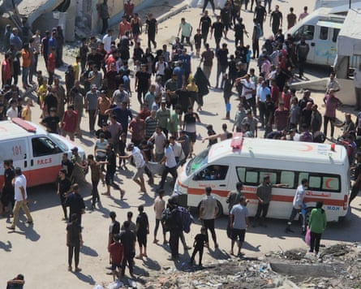
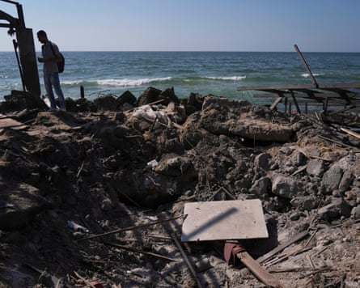

E arly afternoon was a busy time in the al-Baqa cafe, on the waterfront in Gaza City. Under the wooden slatted roof, seated at plastic chairs and tables, were dozens of Palestinians seeking respite from the relentless 20-month war that has devastated much of the bustling, vibrant town.
On one side was the Mediterranean, blue and calm to the horizon. On the other, battered apartment blocks, wrecked hotels and the close-packed tents of displaced families.
Founded almost 40 years ago, the family-run al-Baqa was for many in Gaza City a reminder of better, more peaceful times. It had long been a place to escape the claustrophobic strictures of life in the crowded territory, to talk freely, laugh and dream.
Among those sipping coffee, tea and soft drinks in the cafe was a young artist – Amna al-Salmi – and her friend Ismail Abu Hatab, a 32-year-old photographer and film-maker. Others included another journalist and at least one family with young children, including a four-year-old child, and a mother and her two daughters.
Then, at about 3pm, the peaceful scene at the al-Baqa cafe was transformed. Witnesses described a huge roaring explosion , flames, a plume of ash-grey smoke rising fast into the air. No one needed to ask what had happened.
In recent days, the Israel Defense Forces (IDF) has escalated its offensive across all of Gaza but focused much of its firepower on the territory’s north, where Hamas remain relatively entrenched despite multiple military assaults.
Tanks have advanced into neighbourhoods to the east of Gaza City, so-called “evacuation orders” have forced thousands from makeshift shelters and airstrikes have killed dozens.
When the dust and smoke cleared at the al-Baqa cafe, scenes of carnage were revealed.
People and emergency services gathered at the scene at al-Baqa cafe.Photograph: Seham Tantesh/The Guardian
“I stepped outside briefly to get something to eat, and when I returned – just as I was close – a missile struck,” said Abu al-Nour, 60.
“Shrapnel flew everywhere, and the place filled with smoke and the smell of cordite. I couldn’t see anything. I ran toward the cafe and found it destroyed. I went inside and saw bodies lying on the ground. All the cafe workers were killed.”
Adam, 21, was working nearby, renting out chairs and tables on the small promenade.
“When I reached the site, the scenes were beyond anything imaginable. I knew all the workers at the place. It was full of customers of all ages,” he told the Guardian.
Other witnesses described seeing a dead child, an elderly man with both legs severed and many others with serious injuries.
All said they had been surprised by the extent of the damage, which wrecked the entire cafe, warping concrete columns and scattering debris. A deck of cards and a giant stuffed toy animal could be seen amid the wreckage.
Even hours later, the air “smelled of blood”, one witness said.
Many expressed surprise that the cafe could be targeted at all. A 55-year-old sports teacher who lives nearby described the cafe as the “nicest in Gaza” and a place that “should have been the safest of anywhere” in the Palestinian territory.
An IDF spokesperson said the attack was under review, adding that the Israeli military had “struck several Hamas terrorists in the northern Gaza Strip” and that “prior to the strike, steps were taken to mitigate the risk of harming civilians using aerial surveillance”.
In a separate statement on Tuesday, the IDF said Israel’s air force had attacked more than 140 “terror targets” in Gaza over the previous day, including “terrorists, anti-tank missile launch posts, weapons storage facilities and other terrorist infrastructure”.
Medical and other officials said that between 24 and 36 Palestinians were killed in the attack on the cafe, with dozens more injured.

Israeli airstrike on popular Gaza beachside cafe leaves at least 30 dead – video report
Among the dead was 35-year-old Nour al-Huda al-Husari, who had gone with her two daughters “to get some fresh air and try to lift their spirits”.
“When I heard there had been a strike, I tried to call … I kept calling, but there was no answer,” said Mohammed al-Husari, her husband.
“Then about an hour and a half after the strike I heard she had been killed. My first thought was: what happened to my daughters? I felt like I was dreaming … I couldn’t believe it.”
The couple’s eight-year-old had been hurled many metres by the blast but was found standing stunned and alone, completely unharmed. But her older sister, aged 12, was badly hurt, suffering a skull fracture and internal bleeding, and could die.
“The hospital was completely full of the wounded and the dead – because the cafe was crowded with women, children and the young. It was not a suspicious or military place,” Husari said.
“If it had been, my wife would never have gone … she was always careful not to go anywhere risky or questionable, out of fear that something might happen nearby. The truth is there is no safe place in Gaza.”
Fatalities included Salmi, the artist, who was involved in initiatives to bring art by Palestinians in Gaza to a wider international audience and to support the most needy among the displaced in the territory.
A Palestinian man checks an area near the cafe that was damaged.Photograph: Jehad Alshrafi/AP
Abu Hateb was also killed. The film-maker was badly injured early in the war and in an interview last year described how his work “haunted” him, bringing insomnia and depression.
“I have seen many martyrs, their meals still in front of them, unable to finish eating because they were killed. I think about that moment they must have felt just before death,” he said.
In addition to casualties from airstrikes, hundreds have died in recent weeks while seeking aid.
Those with savings or salaries can buy enough to survive on in local markets and even pay for drinks or a snack at venues where they can also use reliable wifi. The vast majority of the 2.3 million population suffer acutely, with growing malnutrition and a continuing threat of famine.
The war in Gaza was triggered by a surprise attack launched by Hamas militants into Israel in October 2023, killing 1,200, mostly civilians, and abducting another 250, of whom 50 are still held by the militant Islamist organisation.
The ensuing Israeli offensive has so far killed 56,500, mostly civilians, and reduced much of the Palestinian territory to ruins.